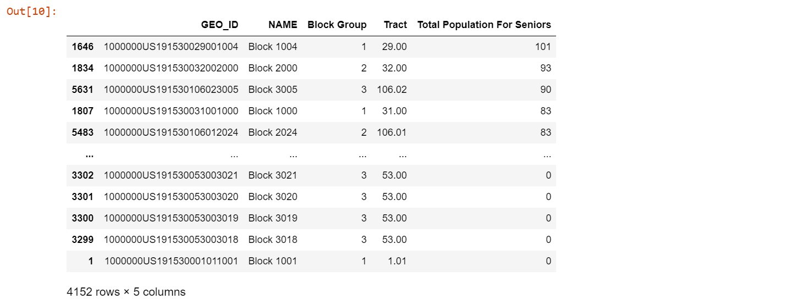
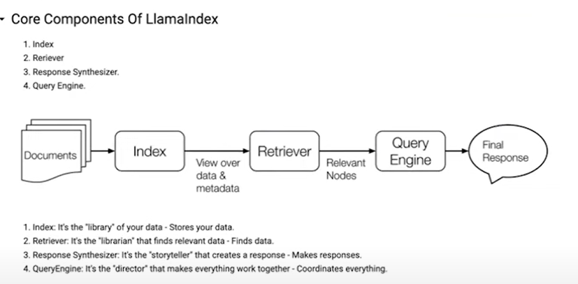
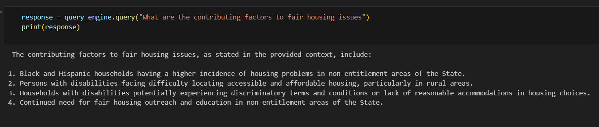
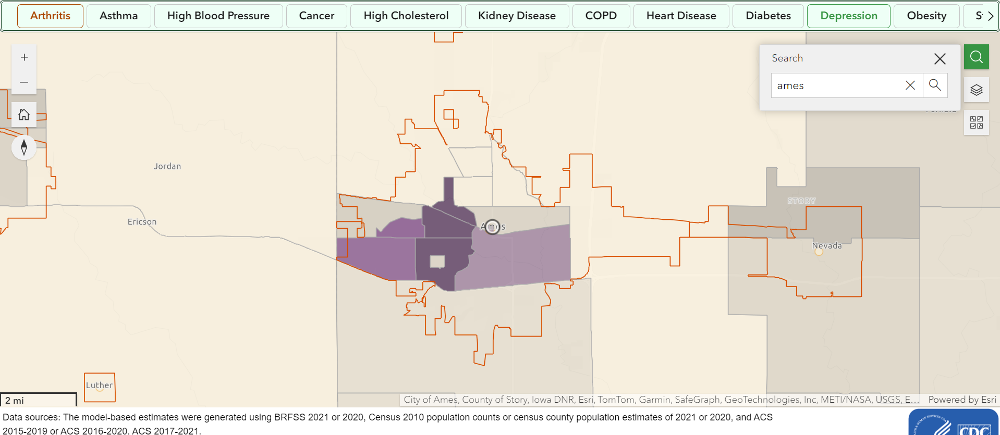

Data Exploration for Population Density
This week we continued looking for data for the smallest unit of area we could.
On the side of population density, we were able to find data down to the house/parcel level for Des Moines and we were able to go ahead and display them along with the census block groups and all residential zones in the Des Moines area as shown in the figure below. We can do the same with the blocks as well.
{kind=link}
From here we wanted to see if we could find data of the same variety for smaller communities rather than just larger cities so our eventual model isn’t biased. Luckily, the Des Moines Data Portal stretches across the entire Des Moines Metropolitan Area which meant we could get data for smaller communities such as Ackworth that has a population of 115.
{kind=link}
{kind=link}
However, we realized we don’t just want communities around the Des Moines Metro and still wanted to reach smaller community data. After some research we found that Iowa has a free GIS database (https://www.iowagisdata.org/) that contains information for numerous counties and cities down to the parcel and building level. One county that we found may be helpful is Winneshiek County as it is in a more rural area of the state away from most metro and micropolitan areas.
{kind=link}
The image above is showing all residential buildings in Decorah, but the database has access to so many more communities and levels of data that will continued to be explored.
We were also able to get a way to calculate population density of our blocks and block groups using tidycensus.
{kind=link}
We also wanted to look into transportation data, however outside of getting routes and stops we couldn’t find much. Additionally, after talking to Omar Padilla this makes sense as most people just don’t prefer to use public transit compared to their own car in Iowa even in the bigger cities like Des Moines which is why much data isn’t available
Data Exploration for Income
We are working on the Income side of housing AI.
Our Idea was to get the data which goses to the extent of Housing units, However when it came to Income we were not able to find the data which even goes to block level, so the only choice for us was to the get the Household income data for which was available in block group level.
In the meantime we were looking on other datasets from different websites if they have any information on income which goes till the block level and fortunately we came over a dataset in HUD website which has the street level data to some extent but it didn’t have complete information but it might be useful for us in the long term.
We have few more datasets to explore and get to a conclusion.
Data Visualization
For the Data visualization I got introduced to folium library which is a powerful Python library that helps us create several types of Leaflet maps.
I tried ploting a map with Household Income data for Des Moines city, my main idea was to find the low income unites in that area.
Data Exploration on Age Distribution
We continue to explore around different datasets that revolves around seniors (aged 65 and over) with a focus on datasets related to health. * Hospital of different cities in Iowa * Healthmap across Des Moines * Public and Private heath coverage across ages in Des Moines 
llamaIndex
llamaindex is a framework that integrates the private data with public data for building applications using Large Language Models (LLM).  Testing out llamaindex on a housing policy of Iowa in 2018 
For Fun
Depression rate across Iowa 
Sources
- Hospital Data in Iowa
- Health Coverage
- Health Map in Iowa
- Public Health Coverage in Des Moines
- Private Health Coverage in Des Moines
- IowaGISdata.org
- Des Moines Data Portal